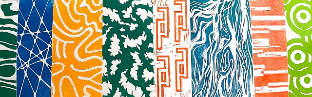
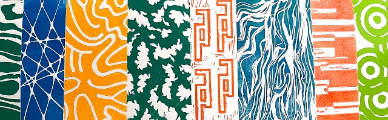
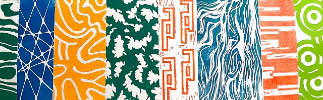
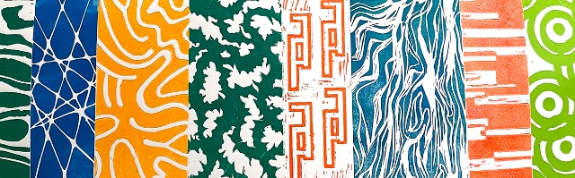
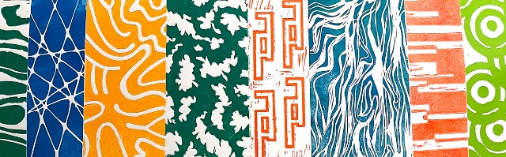

Comment la lettre peut-elle devenir un motif ? C’est la question que je me suis posée à travers ce projet de linogravure. En travaillant sur le mot « chasse », j’ai exploré une diversité de typographies, de tailles et de graisses pour incarner pleinement ce terme. Par ailleurs, un motif accompagne la composition typographique tout en créant une contradiction. Les axes réguliers des lettres contrastent avec les lignes désordonnées du motif, bien que l’harmonie des couleurs vienne unifier l’ensemble.
How can letters become patterns? This is the question I explored through this linocut project. Working with the word “chasse”, I used a variety of typefaces, sizes, and weights to embody the essence of the word. Additionally, a pattern complements the typographic composition, creating a visual contrast. The regular axes of the letters oppose the chaotic lines of the pattern, while the color palette ties the elements together, ensuring cohesion within the project.
Novembre 2023 - Projet de 1e année de DnMade.
